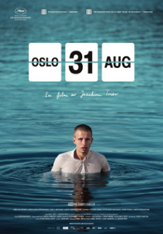
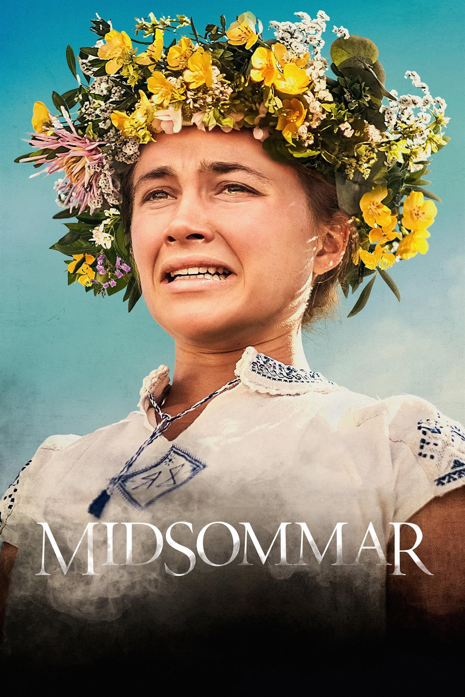
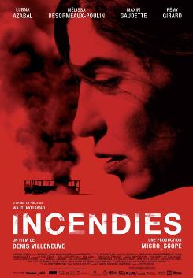

Favoritos
Seguem abaixo os nossos filmes favoritos no momento:

- Oslo, 31 de agosto: Uma obra cinematográfica notável e contemplativa que mergulha profundamente na experiência humana, explorando temas complexos como a depressão, a alienação e a busca por significado na vida. Dirigido por Joachim Trier, o filme apresenta uma narrativa poética e uma cinematografia marcante, capturando a beleza melancólica da cidade de Oslo. (Crédito da imagem: https://en.wikipedia.org/wiki/Oslo,_August_31st)

- Midsommar: O filme, dirigido por Ari Aster, é uma experiência cinematográfica visceral e perturbadora que desafia as convenções do gênero de terror. Diferentemente dos filmes de horror convencionais, que muitas vezes exploram ambientes escuros e sombrios, "Midsommar" se passa sob a luz do sol em um idílico festival sueco, o que aumenta a sensação de desconforto. (Crédito da imagem: https://grandillusioncinema.org/film/midsommar-the-directors-cut/)

- Shiva Baby: O filme, dirigido por Emma Seligman, é uma comédia dramática que se destaca por sua originalidade, diálogos afiados e abordagem única de um momento específico na vida da protagonista. Uma das forças do filme é a capacidade da diretora de criar uma atmosfera de desconforto, utilizando um pequeno elenco e um ambiente fechado. A trilha sonora, a edição ágil e a cinematografia contribuem para a sensação de caos e ansiedade que permeia a história. (Crédito da imagem: https://pt.wikipedia.org/wiki/Shiva_Baby)

- Incêndios: O filme, dirigido por Denis Villeneuve, é uma obra cinematográfica intensa e emocional baseada na peça homônima do dramaturgo Wajdi Mouawad. O filme é uma jornada poderosa que mistura drama, suspense e reflexões sobre os impactos de conflitos sociais e familiares. (Crédito da imagem: https://pt.wikipedia.org/wiki/Incendies)